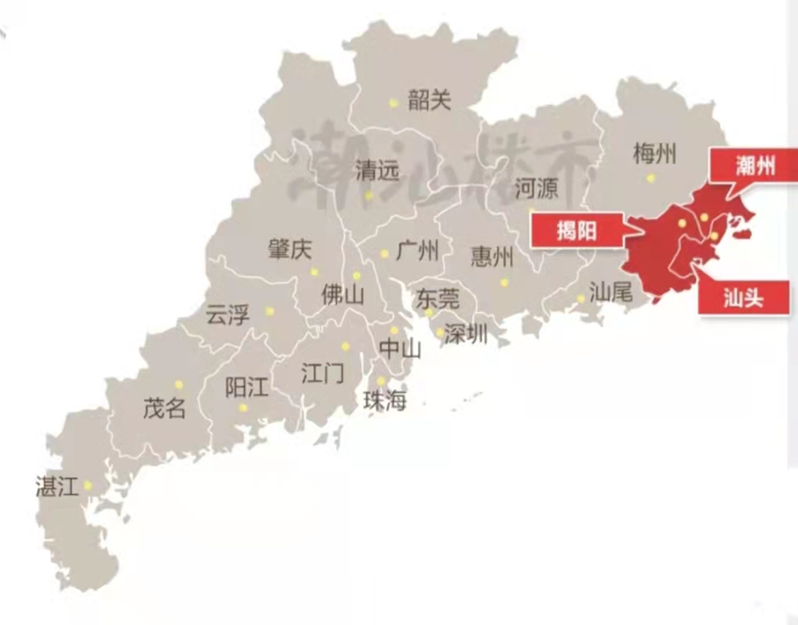
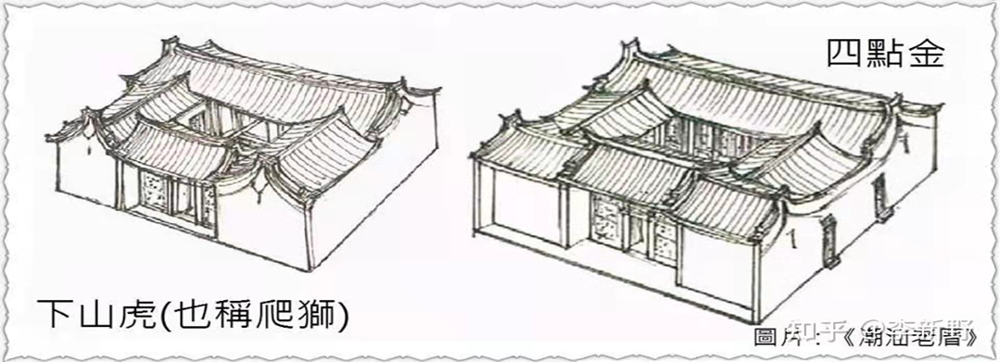
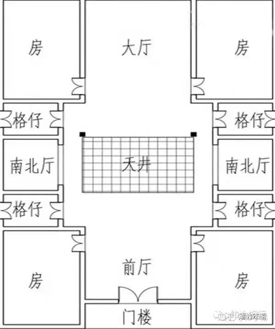
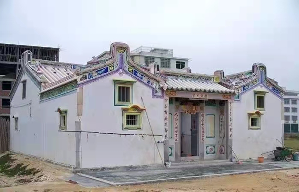
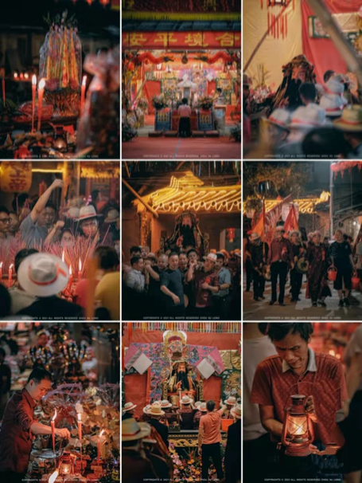
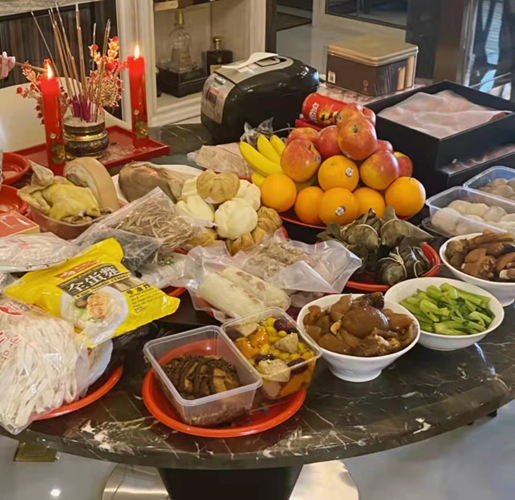
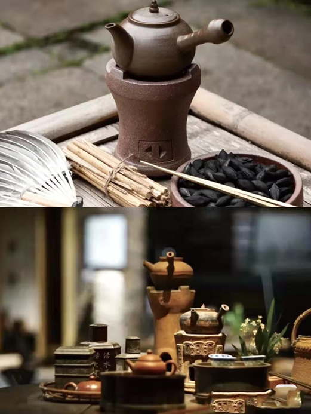
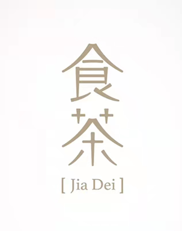

YMming
| 首页 |
自我介绍 |
家乡风俗 |
食品介绍 |
问卷调查 |
|---|
SCSRA
大潮汕风俗
|
潮汕地区 |
|||
|---|---|---|---|
|  | 潮汕地区是指汕头、潮州、揭阳三市。 潮汕人是秦始皇时期中原汉族迁来的，先迁到福建，后来有一些迁到广东， 所以潮汕话与闽南语很像， 属于闽南语体系。 |
||
|
潮汕老厝 |
|||
|  | 潮汕老厝 包括四点金、下山虎、驷马拖车等民居，还有如澄海陈慈黉等中西合璧式建筑。
|
||
| s |  |
“四点金”是潮汕独特民居，名称即是前后四个正房齐向天井,因其四点中角上各一间形如“金”字的房间得名。 | |
|  | |||
|
潮汕民俗 |
|||
| 潮汕民俗 包括年节习俗、婚姻习俗、丧葬习俗、诸神崇拜、礼仪习俗等，还有食七样羹、出花园、行彩桥等民俗。 |  |
||
|  | |||
|
潮汕茶文化 |
|||
潮汕人不可一日无差，平时待客第一件事便是泡茶。 潮汕工夫茶步骤： |
 |
||
|  | |||
------------------------------------------------------------------------------------------- 大潮汕风俗完结...... ilovewm |